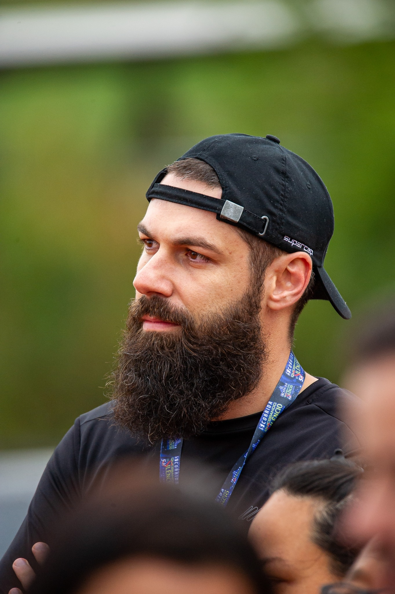

Sobre mim
Olá! Meu nome é Hermes Santos. Sou criador de conteúdo digital com foco no ensino de Excel.
Há 11 anos produzo conteúdos para o meu site, vídeos no YouTube e planilhas personalizadas que ajudam pessoas e empresas a resolverem problemas reais do dia a dia.
Empreendo online com foco em educação, produtividade e automação com Excel, procurando adotar uma abordagem didática e descomplicada focada em quem está começando ou deseja ser mais eficiente.
Entre 2008 e 2011, cursei bacharelado em Sistemas de Informação, mas, por circunstâncias da época, não concluí a graduação. Recentemente, retomei minha jornada acadêmica em busca de atualização e evolução profissional. Optei pelo curso de Análise e Desenvolvimento de Sistemas da UNINTER, por acreditar que ele me proporcionará uma base sólida nas principais áreas da Tecnologia da Informação.
Sinto que preciso ampliar meus conhecimentos para ir além do Excel. Acredito no meu potencial para criar soluções que ajudem pessoas e empresas, mas sei que preciso me atualizar para alcançar esse objetivo.
Meus hobbies
Fora do trabalho, gosto de me dedicar a atividades que me ajudam a relaxar e recarregar as energias. Alguns dos meus hobbies incluem:

- Assistir filmes e séries com minha esposa (especialmente nos finais de semana);
- Ir a shows das minhas bandas favoritas (quando possível);
- Viajar e conhecer novas culturas;
- Ouvir música (minha terapia gratuita);
- Ler livros e assistir vídeos sobre temas como desenvolvimento pessoal, gestão de tempo e outros assuntos de interesse;
- Me aventurar na marcenaria, criando pequenos móveis e acessórios para casa (nada profissional);
- Aprender a tocar violão — comecei há pouco tempo, mas já vejo potencial para se tornar um dos meus hobbies preferidos;
- Praticar corrida três vezes por semana — atualmente, estou me preparando para correr minha primeira meia maratona.
Caso tenha alguma dúvida, entre em contato.